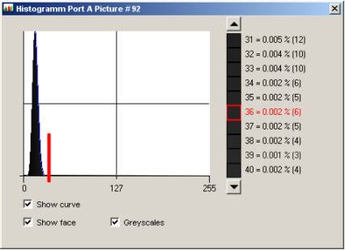

2D Shading
(Gain & Offset Correction and Defective Pixel Interpolation)
Parameter Set
Description
Area Shading coprises three seperate algorithms to improve the quality of the imagery on the fly.
- The (subtractive) offset correction can elimnate the measuring of the dark current in your camera sensor and adjust a fixed pattern imprinted into your sensor.
- The (multiplicative) gain correction can counterbalance inhomogeneties of the used light source and optics.
- The defect pixel interpolation can supress faulty pixels by a linear interpolation through its neighbors.
All three corrections can be utilized comfortably with the help of reference images. Alternatively, you can download your own coefficients with the SDK.
For 1. a 'black' reference image is used to calculate the offset correction. The offsets are measured pixel values for a black image, since substracting these offsets from the camera image results in a homogenous pixel value of zero.
For 2. a 'white' reference image is used to calculate the gain correction. The coefficcients are determined to rescale the luminosity of each pixel to the mean luminosity of the white reference image.
For 3. usually a 'black' reference image is used to idenify defect pixels automatically by a threshold. For details refer to the section of the parameter Threshold DPI below.
Parameters
Offset Enable
After downloading the offset summands to the microEnable board, it is possible to enable the subtractive offset correction by selecting 'On' for the Offset Enable parameter. To disable the offset correction simply set Offset Enable to 'Off' (alternatiely overwrite all summands by 0 by deselecting a filename for the offset reference image and download the summands again).
Please mind the fact, that the offset summands are encoding the position of defect pixels as well. Therefore, no offsets are available for pixels that are marked as defect through a DPI reference image. This is independent from the status of Offset Enable.
Gain Enable
After downloading the gain coefficients to the microEnable board, it is possible to enable the multiplicative gain correction by selecting 'On' for the Gain Enable parameter. To disable the gain correction simply set Gain Enable to 'Off' (alternatiely overwrite all coefficients by 1.0 by deselecting a filename for the gain reference image and download the coefficients again).
DPI Enable (Defective Pixel Interpolation Enable)
After downloading the positions of defect pixels to the microEnable board, it is possible to enable the Defective Pixel Interpolation (DPI) by selecting 'On' for the DPI Enable parameter. To disable the interpolation simply set DPI Enable to 'Off' (alternatiely mark all pixels as working by deselecting a filename for the DPI reference image and download the summands again).
Please mind the fact, that the offset summands are encoding the position of defect pixels as well. Therefore, no offsets are available for pixels that are marked as defect through a DPI reference image. This is independentl from the status of DPI Enable.
Filename Offset
The parameter Filename Offset defines the reference image for the subtractive offset correction.
Usually a black image is used as reference. To record a black reference image, cover the camera lens tightly and acquire and save a single image from the very sensor you are using in your setup.
Filename Gain
The parameter Filename Gain defines the reference image for the multiplicative offset correction.
Usually a white image is used as reference. To record a white reference image, cover your setup by a white sheet and acquire and save a single image under the very light conditions used in your setup.
Filename DPI (Filename Defect Pixel Inperpolation)
This parameter defines the reference image for the Defective Pixel Interpolation.
Usually a black image is used as reference. To record a black reference image, cover the camera lens tightly and acquire and save a single image from the very sensor you are using in your setup.
Threshold DPI (Threshold Defect Pixel Interplation)
This parameter marks all pixels as faulty, which exceed a certain value in the black reference image.
The assumption is, that defect pixels have a constant value irrespective of the absorbed light. Therefore, pixels in a black reference image with values above the dark current are defect. You can easily find a valid threshold by analyzing the histogram of the black reference image, and select a value right from the gaussian peak.

Load Coef.
Calculate the shading coefficents from the reference images and download the data to the microEnable. If no reference images are selected, the identity is set for the data (offset=0, gain=1.0, interpolate=false).
Clear Coef.
Clearing the uploaded shading data is only neccessary before loading new shading data.
References
| Forward |